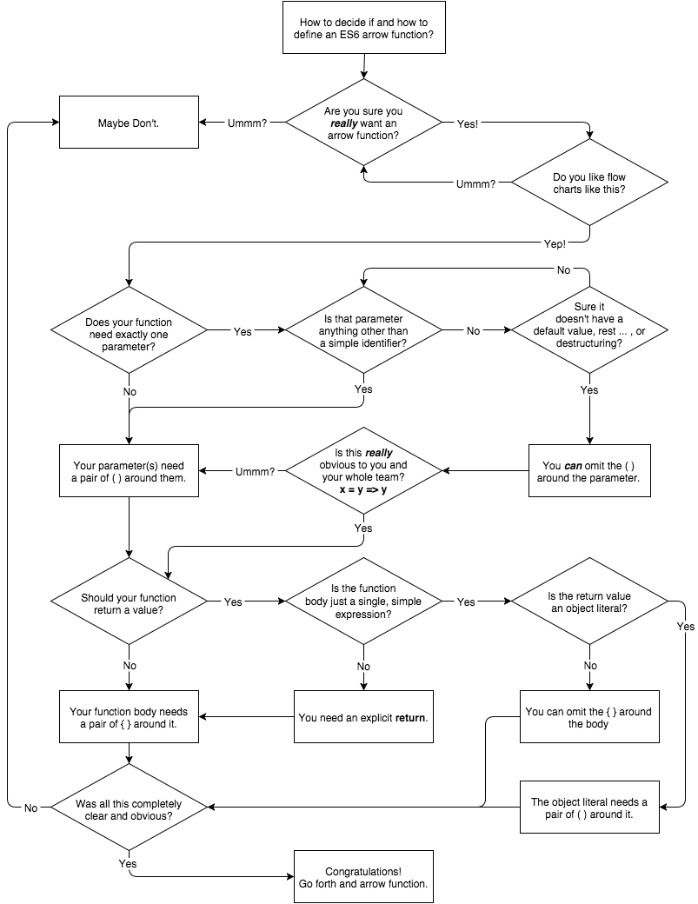

箭头函数与 function 不等价，因为TC39不可能仅因为好看而引入一个语法糖。
箭头函数的渊源可以追溯lambda演算。lambda演算是数学家提出来的，数学定理那么多，今天要证三角定律，明天要证勾股定律，累不累！那能不能将所有的证明问题用一个统一的体系进行形式化描述，然后由机器来完成自动推导呢？lambda演算就是干这个的，图灵也搞了一套体系叫图灵机，两者是等价的。
关于lambda演算说了这么多，好像跟今天要讲的箭头函数没什么关系？其实是有关系的，lambda演算深刻影响了箭头函数的设计。数学家们喜欢用纯函数式编程语言，纯函数的特点是没有副作用，给予特定的输入，总是产生确定的输出，甚至有些情况下通过输出能够反推输入。 要实现纯函数，必须使函数的执行过程不依赖于任何外部状态，整个函数就像一个数学公式，
箭头函数要实现类似纯函数的效果，必须剔除外部状态。所以当你定义一个箭头函数，在普通函数里常见的this、arguments、caller是统统没有的。
箭头函数没有this，那下面的代码明显可以取到this啊：
function foo() {
this.a = 1
let b = () => console.log(this.a)
b()
}
foo() // 1
以上箭头函数中的this其实是父级作用域中的this，即函数foo的this。箭头函数引用了父级的变量，构成了一个闭包。以上代码等价于：
function foo() {
this.a = 1
let self = this
let b = () => console.log(self.a)
b()
}
foo() // 1
箭头函数不仅没有this，常用的arguments也没有。如果你能获取到arguments，那它一定是来自父作用域的。
function foo() {
return () => console.log(arguments[0])
}
foo(1, 2)(3, 4) // 1
上例中如果箭头函数有arguments，就应该输出的是3而不是1。
一个经常犯的错误是使用箭头函数定义对象的方法，如：
let a = {
foo: 1,
bar: () => console.log(this.foo)
}
a.bar() //undefined
以上代码中，箭头函数中的this并不是指向a这个对象。对象a并不能构成一个作用域，所以再往上到达全局作用域，this就指向全局作用域。如果我们使用普通函数的定义方法，输出结果就符合预期，这是因为a.bar()函数执行时作用域绑定到了a对象。
let a = {
foo: 1,
bar: function() { console.log(this.foo) }
}
a.bar() // 1
另一个错误是在原型上使用箭头函数，如：
function A() {
this.foo = 1
}
A.prototype.bar = () => console.log(this.foo)
let a = new A()
a.bar() //undefined
同样，箭头函数中的this不是指向A，而是根据变量查找规则回溯到了全局作用域。同样，使用普通函数就不存在问题。
通过以上说明，我们可以看出，箭头函数除了传入的参数之外，真的是什么都没有！如果你在箭头函数引用了this、arguments或者参数之外的变量，那它们一定不是箭头函数本身包含的，而是从父级作用域继承的。
至于什么情况该使用箭头函数，《You Don’t Know JS》给出了一个决策图：

以上决策图看起来有点复杂，我认为有三点比较重要：